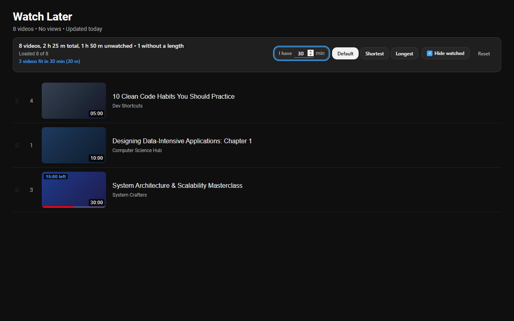

Playlist Lens
A browser extension that adds a bar above any YouTube playlist, Watch Later included. Type the minutes you have, and the speed you watch at, and it shows the videos that fit, shortest first. It also filters titles by keyword, hides watched videos and shows the playlist's total and unwatched runtime.

Source on GitHub · Privacy policy · Ko-fi
Unofficial, not affiliated with YouTube.